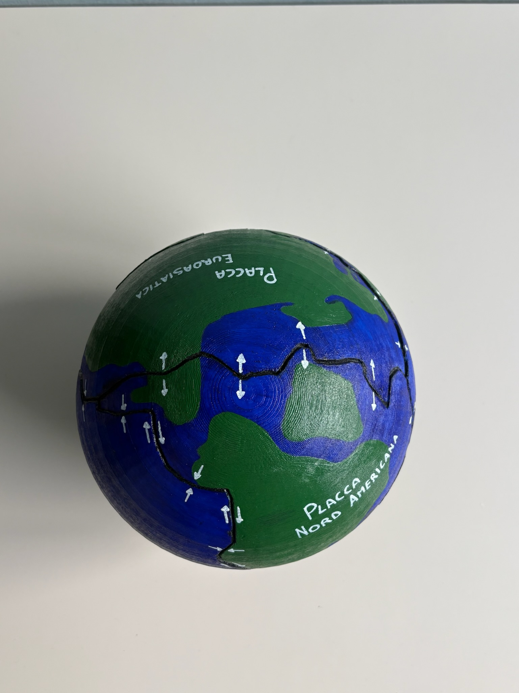
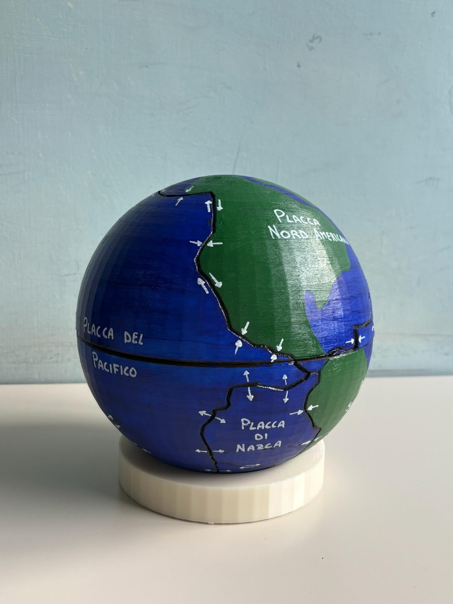

Archivio Progetti



Terra
Il modello sferico rappresenta la Terra e la divisione della sua superficie in grandi frammenti rigidi chiamati placche tettoniche. Queste placche "galleggiano" sul mantello sottostante e sono in costante movimento.
Vulcano acido
Questo modello rappresenta un vulcano caratterizzato da magma acido, ovvero ricco di silice. A differenza dei vulcani basaltici, qui il magma è molto viscoso e scorre con difficoltà, intrappolando i gas e causando eruzioni di estrema violenza.
Sistema Limbico
Il sistema limbico è un insieme funzionale di strutture corticali e sottocorticali localizzate prevalentemente nel telencefalo mediale e nel diencefalo, implicate nell’integrazione tra processi emotivi, memoria e regolazione neurovegetativa. Tra i principali componenti si includono ippocampo (memoria dichiarativa e spaziale), amigdala (valutazione emotiva e risposta alla paura), giro del cingolo e ipotalamo (controllo omeostatico ed endocrino).
Funzioni Matematiche
Questo modello rappresenta le funzioni matematiche utili ai non vedenti per poter comprendere in concreto quali sono le loro caratteristiche e come si sviluppano certe nozioni teoriche nella realtà.
Tempio Greco
Si tratta di un modello tridimensionale che rappresenta la struttura tipica di un tempio greco di ordine dorico. Il tempio era considerato la dimora della divinità e non un luogo di raduno per i fedeli, che rimanevano all'esterno.